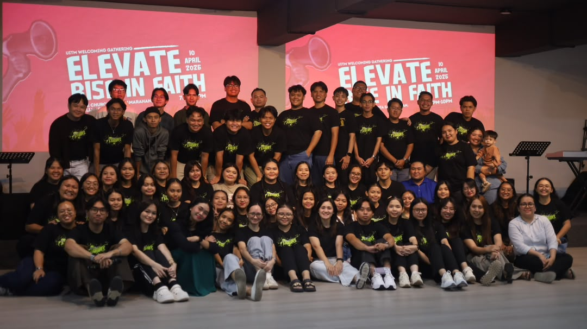
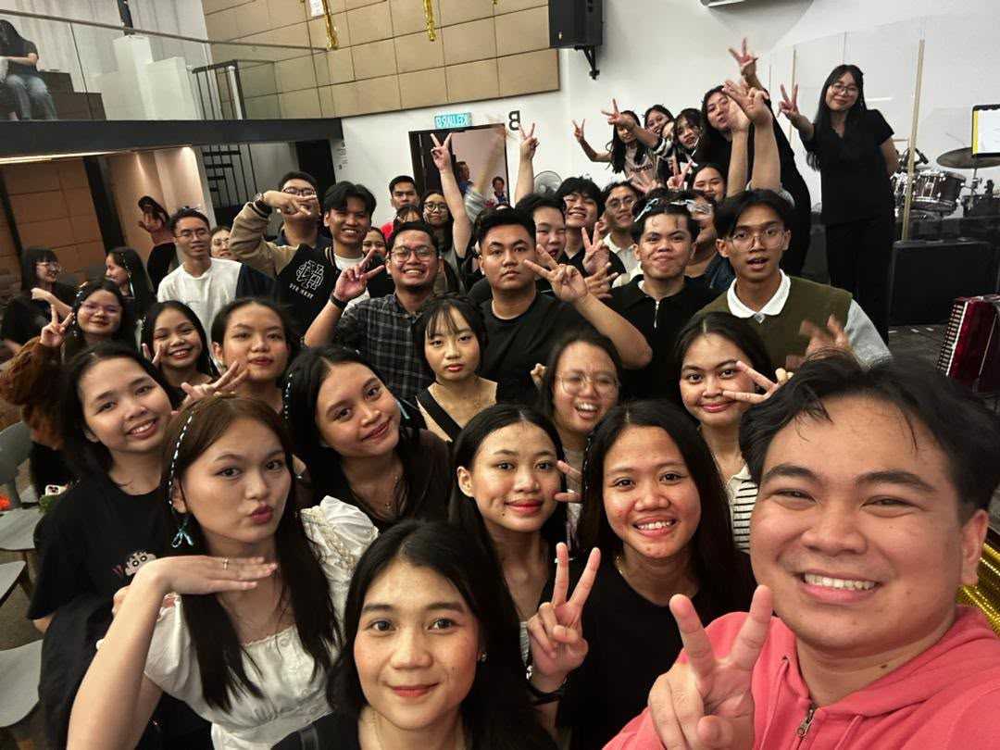
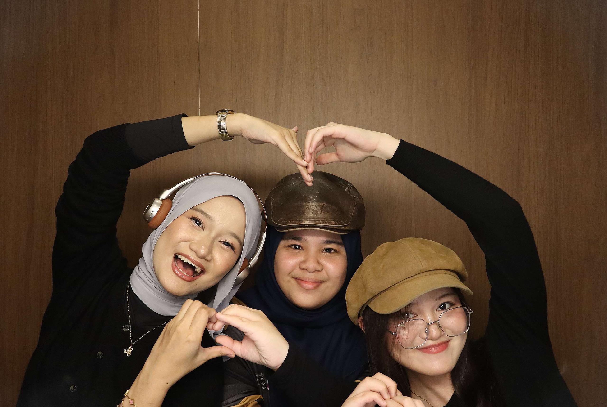
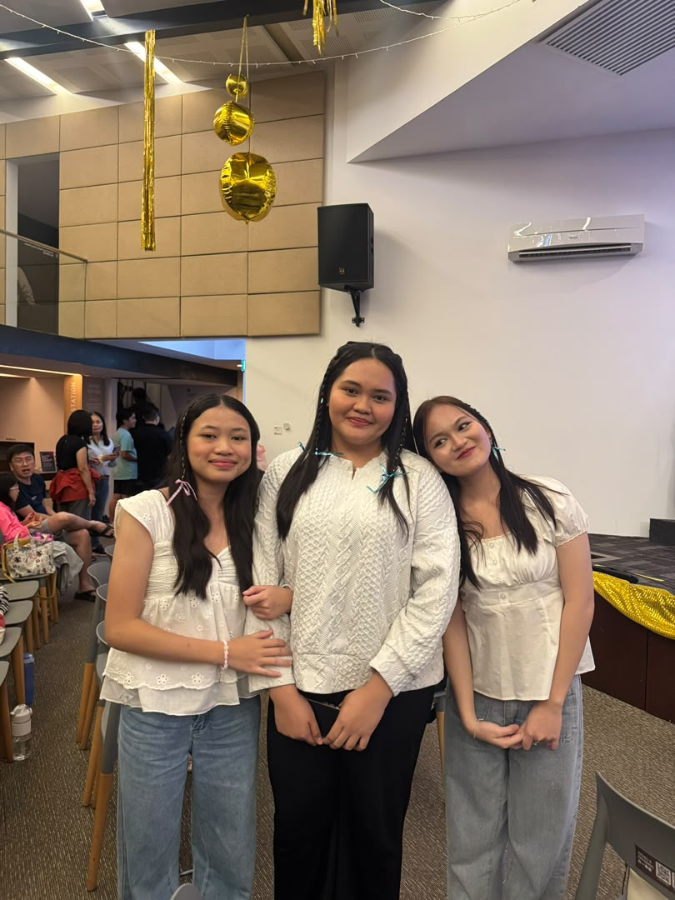

Love
Appreciating the care and affection we share with one another.
A PERSONAL DIGITAL DIARY
Little moments, lovely memories.
CHAPTER 05 / FAMILY
Behind every little story are the people who make life feel like home. This chapter is dedicated to my family.

Home is wherever we are together.
MY HOME, MY HEART
Family is an important part of my life. They are the people who have been with me through different chapters, sharing moments of happiness, laughter and growth.
Whether it is spending time together, sharing meals or celebrating special occasions, these are the little moments that become precious memories.
This page is a small appreciation for the people who hold a special place in my heart.
OUR LITTLE MOMENTS
Some moments may seem ordinary, but they become memories worth keeping.

Time spent with loved ones.

Special days and happy memories.

The memories I want to keep.
WHAT FAMILY MEANS TO ME
Appreciating the care and affection we share with one another.
Being there for each other during both happy and difficult moments.
Creating meaningful moments that we can look back on with a smile.
A LITTLE NOTE OF LOVE
"The best memories are the ones we make together."
TURN THE PAGE
Every photograph tells a story. Take a look at some of my favourite captured moments.
Next Chapter: Gallery